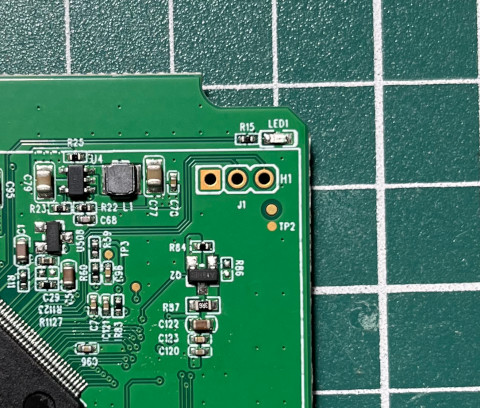
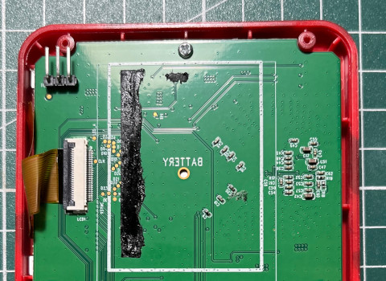
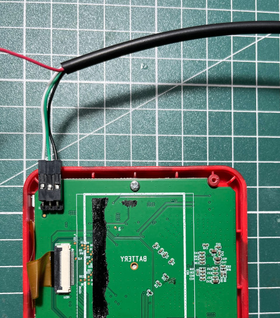

UART腳位



Started! sh: 1: unknown operand sys_render_is_init==false Open /mnt/res/DATA05 Error:No such file or directory set_battery_status_max normal:62,charge:63 normal_battery_table:56,57,58,59,60,61,62, charge_battery_table:57,58,59,60,61,62,63, get_bat_adc_value=63